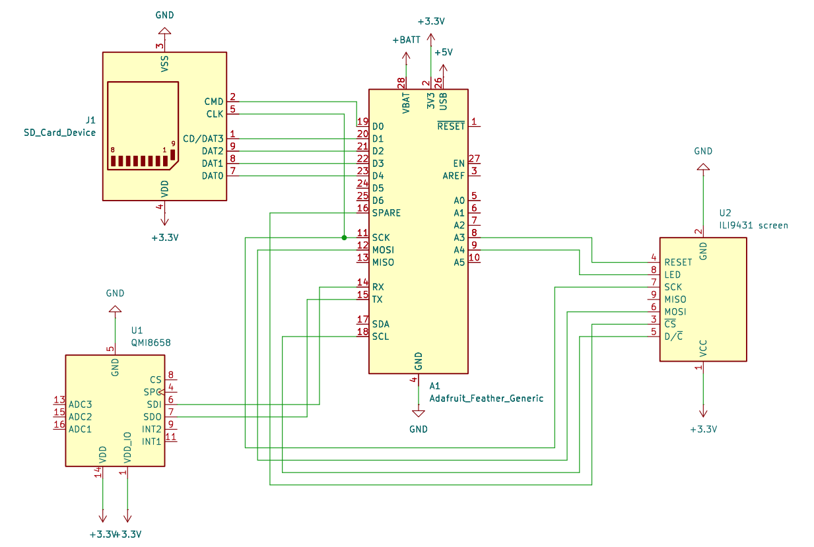
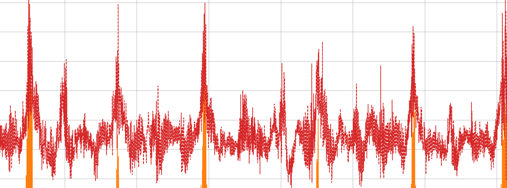
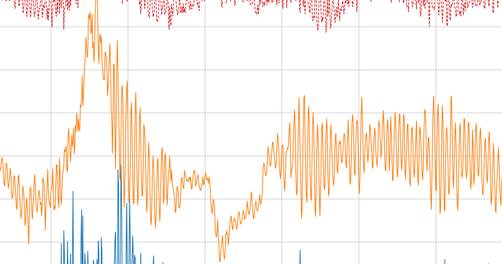
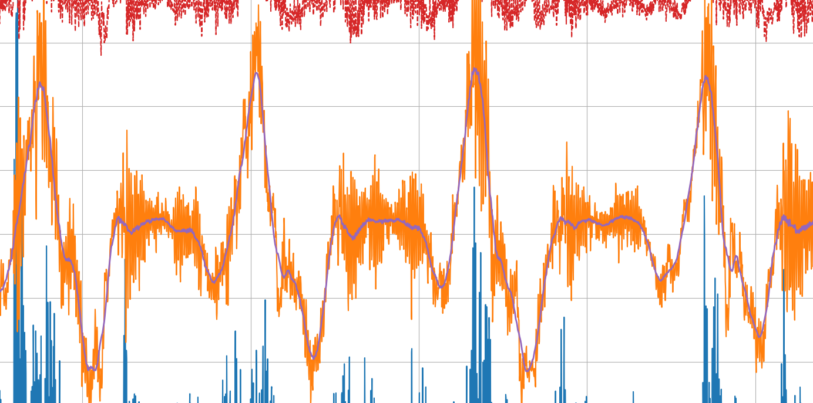
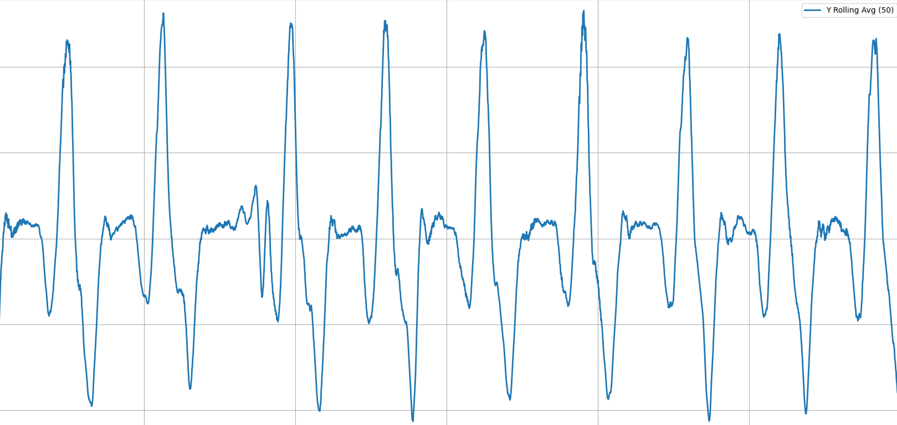
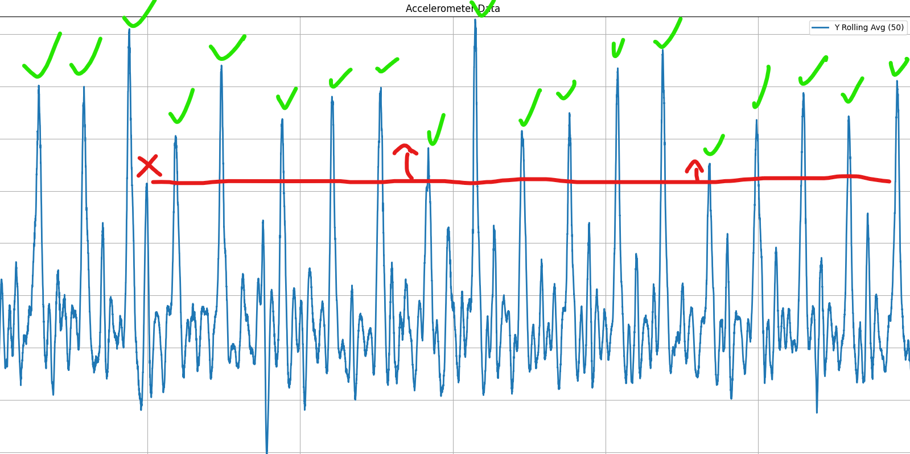
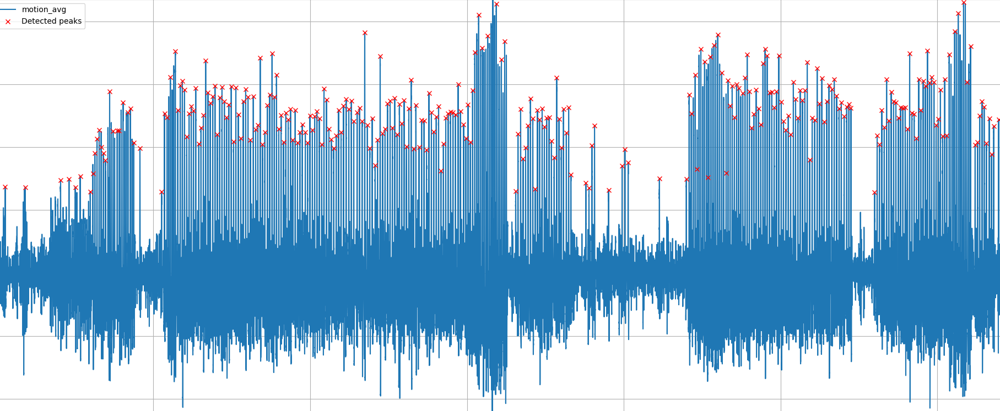
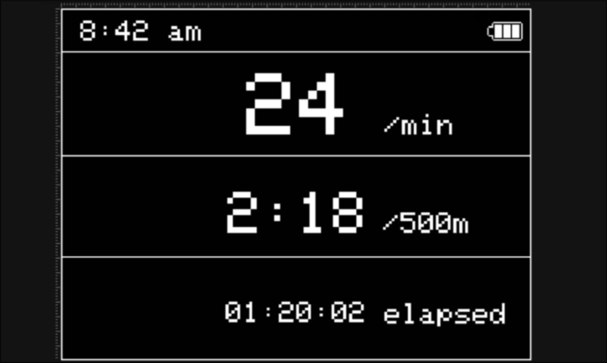
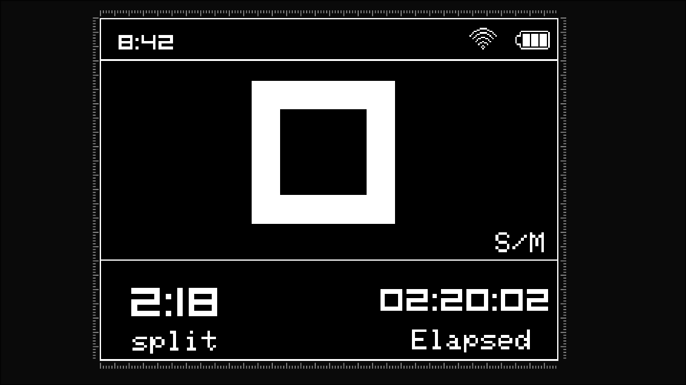
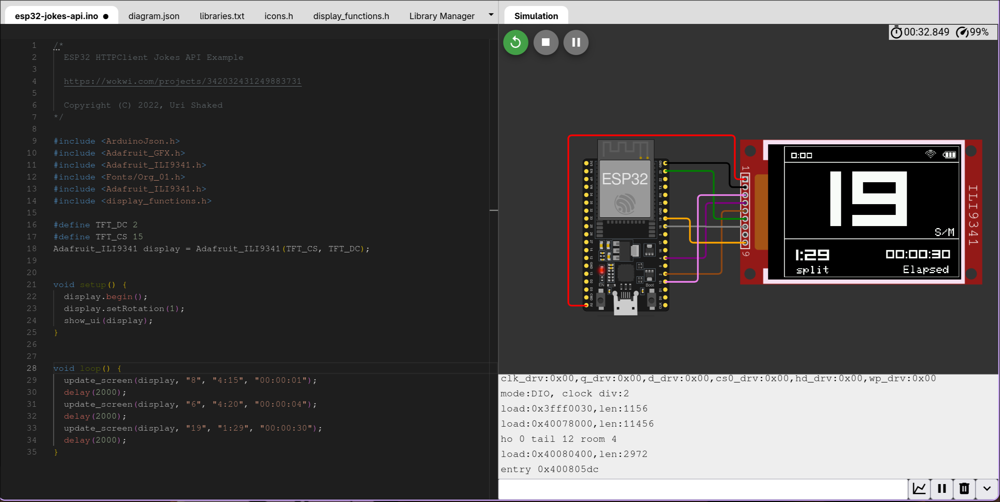

An Open Source Rowing Monitor
Project Logo
| Member | Role |
|---|---|
| Hugo Guenebaut | Embedded Systems |
| Emin Aksoy | Embedded Ai |
| Nixie | Embedded UI |
| Hleb Slyusar | Backend & DevOps |
| David Fresno | Frontend |
| Mark Cannavan | Bluetooth Connection Engineering |
This document explains Gondolier's goals, design, components, and the rationale behind major decisions. It is intended for engineers who want to understand, maintain, or extend the rowing monitor hardware and firmware.
Gondolier is a compact on-boat rowing monitor that detects rowing strokes in real time using an IMU and a TensorFlow Lite model. It displays metrics (stroke rate, split time, session timer) and syncs session data to a phone app over Bluetooth Low Energy (BLE) for further analytics and social sharing.
Rowers and coaches benefit from immediate, accurate stroke detection and per-stroke metrics. Existing solutions are bulky, old and expensive. Gondolier provides a lightweight, dedicated device that sits on the rigging, giving rowers immediate feedback and long-term session sync.
At a high level Gondolier consists of:
embedded-code.ino.accelerometer.h.Display.h.model.tflite and supporting headers model.h, model_data.h) that classifies input windows into stroke / non-stroke.networking.h to send compressed session data to a phone app.This section describes components and their responsibilities, and how they interact.
The firmware organizes functionality into modules:
accelerometer.h - handles IMU initialization, configuration and provides a ring buffer of recent acceleration samples.model.h / model_data.h - contain the TensorFlow Lite Micro model and inference integration code.Display.h - UI primitives for the on-boat display: main screen, metric updates, and minimal menus.networking.h - BLE advertisement, GATT services, and a simple protocol to upload sessions to the phone app.embedded-code.ino - application entrypoint, task orchestration, and state machine for session lifecycle.model.tflite). At runtime we run a fixed-length sliding window of accelerometer magnitude through the TFLite Micro interpreter. The model outputs a probability (stroke / not-stroke) and the firmware applies a detection algorithm (threshold + debounce) to produce discrete stroke events.The electronic assembly was straight forward, as this is only a prototype, we used dev boards where possible. For the ESP32, I used a clone of the adafruit feather TFT with an integrated accelerometer; the accelerometer communicates with the MCU using I2C. The screen was a cheap TFT breakout board which was connected using the serial peripheral interface (SPI) for communication, the entire assembly was done using a perforated prototyping board. A 3.3v compatible SD card module was connected using SPI as well and so unique “chip select” pins were assigned to each SPI module. Buttons were added for control and were wired for pullup resistors. Debouncing capacitors were used to smooth button, accelerometer and voltage across the full circuit, a CP2104 Li-Po battery management system board was connected with a battery for the duration of data collection but this was removed after for safety.
Simplified Schematic of the rowing tracker

Breakout image of the electronics:
Image of the full electronics stack:
Unprocessed z axis accelerometer data

Because we knew that rowers would want to tilt the device at different angles so they could view the screen in boats with different designs, we had to process the data in a way that would be totally agnostic to device orientation. To achieve this, we used simple trigonometry. Obtaining the magnitude of the Y and Z axes, where the data is present, turned it into a vector of acceleration that would not change depending on orientation.$$ \vec{v} = \sqrt{Y^2 + Z^2} $$
As is clearly visible in the image below, the noise from the accelerometer is very high, despite having a clear signal, it is very messy data, the next step was to pass it through a low pass filter to cut out the high frequency noise, a simple 100 sample window rolling average was used
$$ \bar{m}[n] = \frac{1}{50} \sum_{k=0}^{49} \sqrt{Y[n-k]^2 + Z[n-k]^2} $$
Noise signal before rolling average

Blue line inside orange shows the processed signal compared to orange noisy signal

Lastly to remove gravitation anomalies, another rolling average was done but with a sample window size of 500, this acted as a high pass filter allowing the stroke data to pass through but not changes in the tilt of the boat
$$ \bar{m}[n] = \frac{1}{500} \sum_{i=0}^{499} \frac{1}{50} \sum_{k=0}^{49} \sqrt{y[n-i-k]^2 + z[n-i-k]^2} $$
30 seconds of processed data showing 9 strokes

Creating stroke and non stroke training windows: Now that the data is cleaned and processed we had to decide how to best package the data to feed into the neural network, we tried a variety of methods for this, where we struggled was finding non stroke data, typically once on the water, Sally will row stroke after stroke until she is done with little rest time so to get non stroke data is very difficult, i created a python script that looked for peaks over a certain height, it labelled these peaks and then created windows across the whole dataset, overlapping with an offset of 1 second, the % of the stroke in each window was labelled based on where in the stroke the spike occurred and then a graph of each stroke was presented by the code to be manually approved or rejected, all windows that had less than 70% of a stroke as labelled as not a stroke. In the end, 400 windows were given to the model to train on, 300 stroke windows and 100 non stroke windows. This was a smaller dataset than we had wanted to work on but it still functioned well. This was the 8th different way we tried to window the data, it was difficult and involved a lot of trial and error and any attempt to use AI on this task threw us awry as this has never been attempted before publicly so there is no data online
Manual review of stroke data

Automated review of stroke data of entire 40 rowing session

Acquisition: The IMU runs at a sampling frequency of 125Hz. The accelerometer vectors are read into a circular buffer.
Processing: in order to negate the issue of device orientation in the boat, the magnitude of the y and z axis data is taken, this makes the stroke detection orientation agnostic, this is put through a further high pass filter to remove gravity anomalies and a low pass filter to remove noise from the sensor
Windowing: Every inference step takes the recent 850 samples after processing. The data is then normalised using a moving scale and then put passed to the model.
Inference: The TFLite Micro interpreter (model.h) runs the model on the input window and returns a probability for a stroke. The firmware compares the probability to a threshold and uses a small state machine with hysteresis to avoid false positives from boat motion.
Event generation
Confirmed strokes are timestamped and added to the session buffer. Stroke rate (spm) and split time are computed using recent stroke intervals.
embedded-code.ino - Main loop and mode management (idle, rowing, paused, sync). Handles button input and session start/stop.accelerometer.h - IMU init, sample acquisition, buffer API: void imu_init(); bool imu_has_samples(); void imu_pop_sample(Sample *s);Display.h - APIs: display_init(), display_mainScreenUpdate(spm, split, elapsed), display_drawMessage().networking.h - BLE advertise, GATT service. Uses a small framing protocol: session metadata, then compressed sample/stroke records.model.h / model_data.h / model.tflite - model binary integrated as const array plus code to call interpreter and return detection probability.The project is structured as an Arduino-style sketch with embedded-code.ino at the root and headers in the same folder. Two common ways to build and flash:
esp32 (Espressif) and select ESP32-S3 board.embedded-code.ino and upload.platformio.ini with the espressif32 platform and board = esp32-s3-devkit (or similar). Use the upload and monitor targets.#define DEBUG_SERIAL to get verbose logs of sensor values, inference probabilities, and BLE state.probability and timestamp pairs to serial and replay them offline.Unit testing on-device is limited, but key techniques used:
networking.h to avoid accidental data exposure.Multiple factors went into the decision for the user interface layout. At the top of the list, visual clarity was the number one priority.
The embedded electronics use the screen in a horizontal layout, with the longest part of the screen being at the top and bottom. This provided us with a large canvas to give the split time and elapsed time equal room, while giving away most of the screen realestate to the strokes per minute counter.
Although capable of displaying colors, the UI is primarily using black and white to display the elements. This was done to ensure proper visibility while working on a rowboat, as adding color to the text or the numbers would make it harder to read.
Even though the screen is capable of touchscreen funciontality, we have decided against using it, since wrong inputs could occur due to the nature of the wet environment that the product would be in.
The initial screen layout consisted of a top bar, for displaying the time, and equal-space segments for the strokes per minute, split and elapsed time.

After review and feedback, this screen layout proved suboptimal. The most important piece of information on the screen for a rower will be the strokes per minute. Even though it is displayed as the biggest element, it still might not be clear enough for the number to be glanced at from a distance, or if the screen gets wet. Additionally, the font chosen proved not legible enough, especially since the same font was used for the text and the numbers. This led to many rough pixelated edges, making it harder to see the information needed.The final UI screen builds upon the feedback received in all aspects.

When the final rendition of the UI was settled, work began on creating update functions for each element. The focus was on providing update functions to change the main UI elements pertaining to rowing, and the option to change all of these with a single function call. More functions were added in the final design as to change the color of the Wifi symbol to show when data transfer is ready, and for changing the current time in the top left.
void show_ui(tft) initial set up of the UI and their elements, like wifi, battery, timer, strokes, split and time.void splashscreen(tft) displays the logo at startup.void update_timer(tft, time) updates the total time elapsed screen element.void update_split(tft, split) updates the split time screen element.void update_strokes(tft, strokes) updates the strokes per minute screen element.void update_screen(tft, strokes, split, time) combines the 3 functions above into 1 for easily updating the main UI elements with one command.Physical access to the board was limited, so to test out the UI, the code, and to ensure everything displayed properly, an esp32 emulator website wokwi.com was used. This website allowed us to work in parallel and then sync our work together using git.

lopaka.app is a webapp enabling an easy and straightforward process to designing screen interfaces for embedded electronics. Using this website, we were able to draft and iterate upon multiple screen layouts.
The website has a feature that allows for image uploads for creating custom logos. In reality, this feature is built upon the adafruit graphics library and image reader library, meaning that while helpful, the logo import and UI design could have been done without reliance on this software.
The final aspect of UI development was the splashscreen greeter. Once the logos were finished, the final choice for which logo to use came down to the two that can be seen above. We decided on going the second logo, mentioning how we might benefit from a simpler and sleeker logo choice, especially when displayed on a small screen.
Heb Slyusar owned the backend API, database schema and migrations, and the CI/CD pipeline for Gondolier. This part of the project turned authenticated mobile app actions into persisted rowing activities, social feed data, secure file access, and a repeatable path from source control to a deployed service.
Decision and trade-off. we kept this subsystem focused on the implemented MVP rather than a larger platform design. That gave us a small and understandable backend surface that supported the app and report requirements without spending project time on infrastructure we did not need to demo.
The backend is organised as a single Go service in app/api, backed by hosted Supabase services for authentication, PostgreSQL, and object storage. Deployment is handled separately from the data layer: the API is built and deployed to Render, while Supabase remains the managed provider for identity, database, and storage concerns.
Architecture figure:
+------------------+ HTTPS + Bearer JWT / WebSocket +----------------------+
| Flutter mobile | -------------------------------------------> | Go API (Gin) |
| application | | hosted on Render |
+------------------+ +----------+-----------+
|
+-----------------------------------------------+----------------------------------+
| | |
v v v
+---------------------+ +---------------------+ +---------------------+
| Supabase Auth | | Supabase Postgres | | Supabase Storage |
| JWKS token verify | | app data + RLS | | avatars + images |
+---------------------+ +---------------------+ +---------------------+
+------------------+ test / build / deploy hook +----------------------+
| GitHub Actions | -------------------------------------------------------> | Render deployment |
+------------------+ +----------------------+
Go and Gin were chosen because the service only needed a small number of explicit routes, middleware, and query paths, and the code could stay in one binary without a large framework. Supabase reduced operational complexity by providing managed auth, Postgres, and storage in one place. Render was a practical fit for the API because it supports a simple deploy-hook workflow and a lightweight hosted demo environment.
Decision and trade-off. This architecture deliberately prefers managed services over a fully self-hosted stack. The trade-off is less control over every layer, but in return we gained faster delivery, simpler environment setup, and tighter integration between auth, storage, and database security.
The HTTP API is wired in app/api/cmd/server/main.go. Routes are grouped under /api/v1, public health checks are exposed without authentication, and all activity, follow, metrics, files, and websocket endpoints are protected by JWT middleware. The request flow is consistent: middleware authenticates the caller, handlers validate route parameters and JSON payloads, and the activityStore repository performs database access and maps rows back into API response models.
| Interface | Auth | Purpose |
|---|---|---|
GET /health, GET /api/v1/health |
No | Health checks for local use, uptime probes, and hosted deployment monitoring |
GET /api/v1/activities |
Yes | List visible activities for the authenticated user using following, global, or friends scope |
POST /api/v1/activities |
Yes | Create an activity with validated visibility, optional team ownership, and optional route GeoJSON |
GET /api/v1/activities/:id |
Yes | Fetch one visible activity by UUID |
PATCH /api/v1/activities/:id/like |
Yes | Apply an idempotent like and return refreshed counters |
GET /api/v1/follows/suggestions |
Yes | Return suggested profiles to follow, with bounded limit parsing |
PUT /api/v1/follows/:user_id, DELETE /api/v1/follows/:user_id |
Yes | Idempotent follow and unfollow operations |
GET /api/v1/metrics/summary |
Yes | Aggregate workouts between from and to RFC3339 timestamps |
POST /api/v1/files/upload-url, POST /api/v1/files/download-url |
Yes | Generate signed storage URLs for objects owned by the authenticated user |
GET /api/v1/ws |
Yes | Open an authenticated websocket for realtime feed and status events |
Several endpoint behaviours were designed to keep clients simple and responses predictable. GET /api/v1/activities defaults to the following feed scope, while global and friends are explicitly parsed and rejected if invalid. PUT/DELETE follow operations and activity likes are idempotent, which means the client can safely retry requests without creating duplicate state. Metrics requests require RFC3339 timestamps and reject inverted date ranges at the handler level before a database query is attempted.
The activity creation path also normalises route data before persistence. The server accepts a GeoJSON LineString, a Feature containing a LineString, or a FeatureCollection that includes one, then rewrites that payload into a canonical LineString object. This prevents downstream code and SQL functions from having to support multiple route shapes. Signed file URLs follow the same pattern of bounded behaviour: expiry defaults to 600 seconds, is clamped to the range 60-3600 seconds, and only returns URLs for valid object paths. Realtime support is intentionally small and explicit, with websocket channels for feed, status, and a notifications placeholder, all using a common {channel, type, timestamp, payload} envelope.
Decision and trade-off. I chose explicit handler validation and small repository methods instead of a more abstract service stack. The code is more repetitive, but every route's behaviour, validation rule, and failure mode is easy to trace, which was a better fit for a project that needed clarity more than abstraction.
Authentication is based on Supabase access tokens, but the Go API verifies those tokens itself rather than delegating every request to another service. On each authenticated request the middleware extracts Authorization: Bearer <token>, decodes the JWT header, fetches the correct RSA public key from Supabase's JWKS endpoint, verifies the RS256 signature, and validates the important claims: exp, nbf, iat, and, when configured, iss and aud. Once validated, the token's sub claim becomes the backend user identity stored in Gin context as auth.user_id.
This approach keeps identity handling simple in the rest of the backend. Handlers and repositories never need to trust user IDs from the request body; they always derive the acting user from the verified token subject. Activity visibility is enforced in two layers. At application level, feed and detail queries are written so that a user only sees their own activities, public activities, followed-user activities with followers visibility, or team activities when they are a team member. At database level, row-level security is enabled on public.activities and mirrors those same visibility rules with policies based on auth.uid().
Storage security follows a similar pattern. Supabase storage buckets avatars and workout-images are private, and SQL policies on storage.objects only permit access when the object's first path segment matches the authenticated user's UUID. The API then adds a second check when generating signed URLs: the requested object path must begin with <user_uuid>/..., must not contain invalid segments such as .., and must use forward slashes. This extra validation is necessary because signed URL generation uses the Supabase service role and would otherwise bypass normal row-level access checks.
Decision and trade-off. Manual JWKS verification required more code than using a shared secret or opaque auth proxy, but it kept the API independent, avoided storing a JWT signing secret in the service, and made the trust boundary explicit. The trade-off is that security logic has to be implemented carefully, which is why both middleware checks and database policies were used.
The schema is relational and centred on activities, users, and simple social interactions. UUID primary keys were used throughout because they work cleanly across mobile clients, backend services, and Supabase authentication. The core entities are summarised below.
| Entity | Purpose | Key relations and details |
|---|---|---|
profiles |
Public-facing user profile information | Primary key also references auth.users(id) |
teams |
Optional grouping for shared activity visibility | Owned by one profile |
team_members |
Membership join table for team access | Composite key (team_id, user_id) with role constraint |
activities |
Main workout/feed record | References profiles, optional team_id, stores route_geojson |
activity_samples |
Raw per-stroke telemetry for one activity | Composite key (activity_id, stroke_timestamp_ms) with cumulative distance and derived coordinates |
follows |
Directed social graph | Prevents self-follow via check constraint |
activity_likes |
Idempotent activity likes | Composite key (user_id, activity_id) |
activity_comments |
Comment records for activities | Stores body text and creation timestamp |
The activities table carries several constraints that directly support the product behaviour. Visibility is constrained to private, followers, public, or team. team_id may only be present for team visibility. route_geojson is stored as jsonb but is checked to ensure it is shaped as a LineString with a coordinates array. Query performance is supported by indexes on (user_id, start_time desc), (team_id, start_time desc), and (visibility, start_time desc), because those match the main feed and detail access paths. The social tables also add indexes for follow lookups, likes, and comments so counts and visibility checks do not require full scans.
The migration history shows how the schema evolved with the product:
000001_initial_schema.up.sql created the social and activity tables, team membership automation, and activity row-level security policies.000002_storage_policies.up.sql locked down Supabase storage buckets and object ownership rules.000003_activity_samples_stroke_distance.up.sql changed activity_samples from generic per-sample metrics to raw stroke timestamps plus cumulative distance, and introduced SQL functions to recompute activity-level aggregates.000004_activity_sample_coordinates.up.sql added longitude, latitude, and coordinate-source columns and computed stroke locations by interpolating along the stored route geometry.000005_profiles_on_auth_signup.up.sql added a trigger and backfill query so new Supabase auth users automatically get a matching profile row.Two schema decisions are especially important for correctness. First, profiles are tied directly to Supabase auth users, which avoids custom identity reconciliation logic. Second, the database does not treat route data as free-form JSON; it constrains and normalises the shape early so later logic can rely on it.
Decision and trade-off. I chose a strongly constrained relational schema instead of storing most app state in loosely structured JSON documents. That makes migrations and schema changes more deliberate, but it gives clearer integrity guarantees and far simpler query logic for feeds, follows, and derived workout summaries.
One of the most useful database decisions was to move derived workout metrics into SQL functions and triggers. activity_samples stores raw stroke events using stroke_timestamp_ms and cumulative distance_m, while the database computes activity-level fields such as duration_seconds, distance_m, avg_split_500m_seconds, and avg_stroke_spm. The core function recompute_activity_metrics_from_samples reads the minimum and maximum stroke timestamps, counts strokes, calculates elapsed time, and writes the aggregate values back to the parent row in public.activities.
This means the mobile app and API do not need to recalculate those values on every request. Once samples are inserted, updated, or deleted, trigger functions refresh the activity summary automatically. The later coordinate migration extends the same idea to spatial data. recompute_activity_sample_coordinates reads the activity route, calculates segment lengths with a Haversine helper, and interpolates each stroke position along the route based on cumulative distance. A separate trigger also recomputes sample coordinates if the stored route geometry changes.
Persisting derived metrics in the database creates one consistent source of truth for feed cards, detail screens, and summary endpoints. The backend can query already-computed workout values, while activity_samples still preserves the raw timeline needed for richer future analysis. This split between raw data and derived aggregates is a common pattern in telemetry systems because it keeps read paths fast without discarding the underlying event history.
Decision and trade-off. Database-side derivation makes reads simpler and keeps client-visible workout values consistent, but it pushes more logic into migrations and trigger functions. I accepted that trade-off because the calculations are tightly coupled to persisted rowing data and are safer when enforced centrally rather than duplicated across clients.
Operationally, the backend is designed to be easy to run locally and predictable to deploy. The app/Makefile auto-loads app/api/.env.dev when present and exposes a small set of commands for the most common workflows.
| Layer | Implementation |
|---|---|
| Local backend commands | api-run, api-start, api-test, api-vet, api-build |
| Database migration commands | migrate-up, migrate-down, migrate-version |
| Required runtime configuration | DATABASE_URL or DB_URL, and SUPABASE_JWKS_URL |
| Optional runtime configuration | SUPABASE_URL, SUPABASE_SERVICE_ROLE_KEY, JWT_ISSUER, JWT_AUDIENCE, PORT |
| Continuous integration | .github/workflows/ci.yml runs Go test/vet/build and Flutter pub get/analyze/test on pull requests and pushes to main |
| Continuous deployment | .github/workflows/deploy-go-api.yml builds the Go server and triggers a Render deploy hook on main or manual dispatch |
| Hosting split | Render hosts the Go API; Supabase hosts auth, Postgres, and storage |
The CI workflow is intentionally split into a Go job and a Flutter job, so backend and app checks fail independently and provide clearer feedback. The deployment workflow keeps the release logic deliberately small: it builds the server and then triggers Render only if RENDER_DEPLOY_HOOK_URL is configured, otherwise it logs that deploy was skipped. That keeps the repository safe to run in environments where deployment secrets are intentionally absent.
For local development, the project uses hosted Supabase services rather than a local Docker Postgres container. Migrations are run against the Supabase Session Pooler connection string, which avoids reproducing auth, storage, and database infrastructure locally and keeps development closer to the hosted environment. This is especially useful in a student project where time spent on local infrastructure would have displaced time from application and hardware work.
Decision and trade-off. I prioritised a small operational surface: one Makefile, GitHub Actions for validation, and a deploy hook for release. The trade-off is that the deployment process is not a sophisticated release pipeline, but it is easy to understand, easy to troubleshoot, and appropriate for an MVP and demonstration environment.
The repository includes automated backend tests that match the implemented feature set. handlers_test.go covers route behaviour, request validation, scope parsing, file URL handling, and websocket subscription filtering. auth_test.go checks bearer token extraction and JWT claim validation. repository_test.go checks environment handling, query parsing, and database row scanning into API models. Together these tests focus on the parts of the service that are most likely to break during normal iteration: handler contracts, authentication rules, repository mapping, and realtime channel behaviour.
There are also clear limits to the current backend. The OpenAPI file documents a broader long-term surface area than the implemented MVP, so in practice main.go and the committed migrations are the source of truth for what currently works. The websocket layer includes a notifications.placeholder event but no full notification producer yet. Flutter documentation also notes that file upload/download and websocket integration are deferred beyond the current phase, which means the backend is ahead of the mobile client in those areas. Finally, the deployment approach is intentionally simple and does not yet include staged environments, rollback orchestration, or more advanced release gates.
This chapter therefore describes committed interfaces, committed tests, and committed workflows rather than claiming a fresh point-in-time local rerun of every backend check. That keeps the report accurate and tied to the repository state instead of overstating verification.
Decision and trade-off. I treated testing and delivery as part of the product rather than as cleanup work at the end. The trade-off is that some future-facing features remain only partially integrated, but the implemented backend behaviour is better specified, better tested, and easier for another engineer to continue from.
embedded-code.ino: application entrypoint, state machineaccelerometer.h: IMU driver and bufferingDisplay.h: screen drawing and UInetworking.h: BLE services and sync protocolmodel.h, model_data.h, model.tflite: model binary and inference gluemodel.h contains wrapper functions: void model_init(); float model_infer(float *input);Contributors: